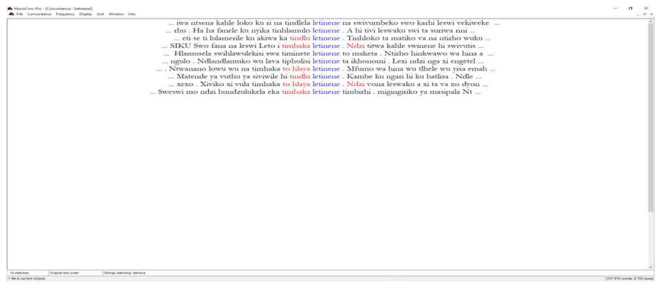

RAIL 2021Tafsiri ya mashine
Kutumia MonoConc Pro kufundisha na kujifunza kolokezoni za kileksika katika Xitsonga
Tafsiri ya mashine, haijakaguliwa na binadamu. Makala asili ndiyo toleo la rejeo; sentensi zilizopigiwa mstari ni zile ambazo ukaguzi wa kiotomatiki haukuwa na uhakika nazo.
Proceedings of the 2nd Workshop on Resources for African Indigenous Languages (RAIL 2021), Journal of the Digital Humanities Association of Southern Africa.
Tafsiri ya Ernst van Gassen (Arktos AI Lab), yenye leseni CC BY-SA 4.0 kama makala asili. Matumizi tena yanaruhusiwa kwa kutaja mwandishi; shiriki marekebisho kwa masharti yale yale. Waandishi asili hawajakagua wala kuidhinisha tafsiri hii.
Maandishi matupu ya kutumia tena, pamoja na leseni yake: Kiswahili · LESENI
Taasisi
Mlambo Respect & Matfunjwa Muzi
South African Centre for Digital Language Resource
(SADiLaR), North-West University, Potchefstroom
South Africa
&
Anwani za barua pepe zimeondolewa kwa sababu za faragha. Zinapatikana katika PDF asilia.
Muhtasari
Rasilimali chache za lugha zimetengenezwa kwa ajili ya lugha za kiasili nchini Afrika Kusini. Kwa kushangaza, hizi pia ni lugha rasmi ambazo kikatiba zinashiriki hadhi sawa ya lugha kama lugha nyingine. Mojawapo ya changamoto kuu kwa utengenezaji wa rasilimali za msingi za lugha ni ukosefu wa korasi za kidijitali zinazoweza kutumika kufunza na kutengeneza rasilimali hizo. Changamoto kama hiyo imezuia matumizi ya teknolojia katika uwanja wa utafiti, kujifunza, na kufundisha katika lugha za asili. Katika utafiti huu, tulitumia MonoConc Pro, konkodensa, kuonyesha jinsi watumiaji wa lugha wanavyoweza kutumia programu hiyo kuonyesha kolokezoni za kileksika kutoka kwenye korasi kwa madhumuni ya ufundishaji na ujifunzaji. Tulionyesha jinsi korasi inavyoweza kutumika kwa wakati mmoja na teknolojia ya lugha kufundisha na kujifunza vipengele vya isimu katika mfumo wa kolokezoni za kileksika katika Xitsonga. Autshumato Xitsonga Monolingual Corpus (AXMC) ambayo ilipatikana kutoka kwenye hazina ya Kituo cha Afrika Kusini cha Rasilimali za Lugha za Kidijitali ilitumika kama data kwa uchambuzi. AXMC ni korasi iliyokusanywa na kupangiliwa kwa nusu-otomatiki katika kiwango cha sentensi wakati wa mradi wa Autshumato. Ili kutafuta mchanganyiko wa maneno, tulichunguza korasi ya AXMC kwa kutumia programu ya MonoConc Pro. Utafutaji wa nusu-otomatiki wa koloketi za vivumishi vya Kitsonga lavakulu, letikulu, lavantsongo, na letinene ulifanyika. Utafiti uligundua kuwa kolokesheni za kileksika au maneno yanayotokea pamoja na vivumishi ni nomino, vivumishi, vimilikishi, na virejeshi. Pia iligundulika kuwa kila kivumishi mara nyingi huhusishwa na nomino fulani zinazotoka kwenye ngeli maalum. Matokeo yaliyopatikana yanapendekeza njia ya vitendo ambayo teknolojia za lugha zinaweza kutumika kuchunguza korasi na kuchunguza mifumo ya lugha kwa ajili ya kufundishia na kujifunza. Tunatumai kuwa mkondo huu wa utafiti utasababisha matumizi ya rasilimali za lugha za kisasa kuchunguza sifa za kiisimu katika lugha za kiasili.
Maneno Muhimu
MonoConc Pro, Kolokesheni za kileksika, Xitsonga, Konkodansi, Rasilimali za lugha
1 Utangulizi
Kuna pengo kubwa katika ukuzi wa lugha rasmi za kienyeji za Afrika Kusini, hasa katika matumizi ya vyanzo vya lugha kwa ajili ya utafiti, kufundisha, na kujifunza. Baadhi ya lugha, kama vile Kiingereza na Kiafrikana, zimepewa kipaumbele katika suala la maendeleo na matumizi ya rasilimali za lugha za kisasa, wakati lugha za asili zenye wasemaji wachache, kama vile Siswati, isiNdebele, Tshivenda, na Xitsonga, bado ziko katika mchakato wa maendeleo (Finlayson na Madiba 2002 kama ilivyonukuliwa na Mlambo et al., 2021, uk. 82). Ukosefu wa rasilimali za kisasa za lugha na korasi zinazofaa zinazohitajika kwa ajili ya kujenga zana za kidijitali kwa lugha za kiasili umekwamisha utafiti, ujifunzaji na ufundishaji katika lugha hizi kwa kutumia teknolojia za kisasa. Aidha, masuala ya kisiasa, kiutamaduni na kijamii na kiuchumi yamezuia maendeleo na ujumuishaji wa rasilimali za lugha za kisasa katika lugha za asili (Unesco, 2019). Wakati huo huo, lugha zenye rasilimali na korasi hizo zimenufaika katika nyanja za utafiti, ujifunzaji, na ufundishaji (Yunus, 2017, uk. 297).
Kumekuwa na maendeleo fulani nchini Afrika Kusini kwa kuanzishwa kwa miundombinu ya utafiti wa lugha, kama vile Kituo cha Afrika Kusini cha Rasilimali za Kidijitali za Lugha (SADiLaR), ambacho hutoa korasi na kujenga zana za kidijitali kwa lugha zote 11 rasmi. Kituo hiki kinarahisisha uumbaji, usimamizi, na usambazaji wa nyenzo za lugha za kisasa, pamoja na vifaa vya kidigitali vinavyotumika, ambavyo vinatolewa hadharani kwa jumuiya kwa ajili ya kufundisha, kujifunza, na kufanya utafiti (https://www.sadilar.org). Hata hivyo, lugha nyingine bado hazihudumiwi vya kutosha katika baadhi ya rasilimali za kisasa za lugha za SADiLaR.
Kwa hivyo, juhudi za ziada zinahitajika ili kukuza na kueneza rasilimali za lugha zinazopatikana kwa lugha zote za asili.
Utafiti huu unalenga mchanganyiko wa maneno unaojulikana kama collocations katika isimu. Kolokesheni, au utokeaji pamoja wa maneno, ni muhimu katika ufundishaji na ujifunzaji wa lugha (Jafarpour, 2013, uk. 57). Tunatumia korasi ya Xitsonga, ambayo ni lugha yenye mfumo wa uandishi wa kutenganisha maneno, ili kuonyesha jinsi zana ya konkodansi inavyoweza kutumika kufundisha na pia kujifunza kolokeeshani za kileksika za Xitsonga. Tunazingatia hasa aina za maneno zinazoshirikiana na vivumishi. MonoConc Pro ya Barlow ilitumika kuonyesha jinsi kolokesheni za kileksika zinavyoweza kutazamwa na kujifunza kutoka kwa korasi kwa kutumia konkodansi. Mbinu hii ilibuniwa na (John, 1991) kama Ujifunzaji Unaoongozwa na Data, ambapo wanafunzi au wanafunzi wa lugha hutumia korasi za kielektroniki kuchunguza kikamilifu lugha na mifumo yake ya kisarufi kama vile kolokesheni na koligesheni za vihusishi (Lewis, 2000).
Vichanganuzi vya konkodansi kama vile WordSmith Tools, Multiconcord, na ParaConc vimechunguzwa hasa katika Lugha za Afrika Kusini na wasomi kama vile Taljard na De Schryver (2002), Madiba (2004), Moropa (2007), Ndhlovu (2016), Shoba (2018), na Mlambo (et al., 2021) kwa ajili ya utambuzi na uchimbaji wa orodha za istilahi kwa ajili ya utungaji wa kamusi. Licha ya manufaa ambayo yameonekana, konkodansi hizi hazijatumiwa katika kufundisha na kujifunza sarufi ya Xitsonga. Kwa hivyo, utafiti huu unajaribu kufunga pengo katika matumizi ya mbinu za msingi za korpusi na vifaa vya kuunganisha maneno ili kufundisha na kujifunza mchanganyiko wa maneno katika Xitsonga.
2 Kazi Zinazohusiana
Kwa mujibu wa Moehkardi (2002), lugha zote zina maneno ambayo mara nyingi hutokea pamoja na maneno mengine katika vitengo na kutokea kwao pamoja kunalingana na kanuni maalum za sarufi za lugha fulani, na maneno kama hayo hujulikana kama mchanganyiko. Benson et al. (1986) waligawanya collocations katika aina mbili: collocations za kihisabati na collocations za istilahi. Ukonganishaji wa kisarufi huundwa na nomino, kivumishi au kitenzi, pamoja na chembe (kihusishi, kielezi, au muundo wa kisarufi kama vile infinitive, gerund, au kishazi) (Bahns, 1993). Mchanganyiko wa kihisabati mara nyingi huwa na maana ya kiasili na huandikwa kama vitengo vya pekee kwa sababu maana yao haifanani na maana halisi ya sehemu zake. Wakati huo huo, ukonganishaji wa kileksika haujumuishi vihusishi, infinitive, au vishazi virejeshi, bali hujumuisha michanganyiko tofauti ya nomino, vivumishi, vitenzi, na vielezi (Bahns, 1993). Hata hivyo, katika utafiti huu tunavutiwa na mchanganyiko wa leksi pekee.
Pirmoradian na Tabatabaei (2013) walifanya utafiti wa wanafunzi wa Kiirani wa lugha ya kwanza ya Kiingereza (EFL). Lengo la utafiti wao lilikuwa ni kuchunguza athari ya kutumia Kamusi ya Collocation ya Collins (CCD) kama zana ya concordancer kwa ujifunzaji wa collocation za leksikal za Kiingereza na wanafunzi wa chuo kikuu wa EFL wa Iran. Jumla ya wanafunzi 30 waligawiwa kwa nasibu katika mojawapo ya makundi mawili: kundi la majaribio na kundi la udhibiti. Kikundi cha majaribio kilipewa kazi ya kutambua miscollocations katika 10 lexical collocations. Wakati huohuo, kundi la kudhibiti liliagizwa kutambua mchanganyiko wa maneno katika maandishi waliyopewa. Pirmoradian na Tabatabaei (2013) waligundua kuwa kutumia CCD kama konkodansi kulikuwa na athari kubwa katika utendaji wa jumla wa wanafunzi katika kujifunza kolokea za kileksika za Kiingereza. Kwa vile CCD ilitumika kama zana ya konkodansi, matokeo ya wanafunzi katika kolokea za kileksika yaliboreshwa kwa kiasi kikubwa ikilinganishwa na wale wasio na zana ya konkodansi.
Matokeo pia yalionyesha kuwa kuna tofauti kubwa kati ya athari za mbinu za konkodansi na mbinu za jadi kwa wanafunzi linapokuja suala la kujifunza kolokea za kileksika za Kiingereza kwa wanafunzi wa Kiirani wa EFL. Hii ina maana kwamba wanafunzi wanaotumia konkodensa kujifunza kolokezoni za kileksika wana uwezekano mkubwa wa kuwazidi wanafunzi wanaojifunza kolokezoni kupitia mbinu za jadi.
Utafiti huu pia unachota kutoka kwa utafiti wa Jafarpour et al. (2013), ambao walilinganisha athari za mkabala unaotegemea korasi na athari za mkabala wa jadi wa kujifunza kolokezoni.
Uchunguzi huo ulifanywa katika vikundi viwili vya wanafunzi wa lugha ya pili ya Kiingereza (L2). Kundi la majaribio lilitumia concordancer, wakati kundi la udhibiti lilitumia mbinu ya jadi. Kwa upande wa ustadi na umahiri wa kolokezoni, watu binafsi katika kila kikundi walikuwa katika kiwango sawa wakati majaribio yalipoanza. Jafarpour et al. (2013) waliona kwamba kutumia mkabala unaotegemea korasi kufundisha kolokezoni na matumizi yake katika uandishi kuna manufaa zaidi kwa wanafunzi wa L2 kuliko mbinu za jadi. Kwa ujumla, matokeo yalifichua kwamba kutumia konkodensa kufundisha kolokezoni kuna matokeo zaidi na ufanisi zaidi kuliko kutumia mbinu za jadi za kufundisha kolokezoni.
Kutoka kwa fasihi iliyochunguzwa, hakuna utafiti uliochunguza mchanganyiko wa maneno (lexical collocation) katika Xitsonga, wala kwa msaada wa rasilimali za lugha wala kwa kutumia njia inayotegemea korpus. Hili linafunua hitaji muhimu la kutumia zana za kisasa za lugha kuchunguza mielekeo ya kisarufi katika lugha za kiasili kwa kutumia korasi. Kutokana na hayo, tunaamini kwamba utafiti wetu utafungua njia ya matumizi ya konkodansi na korasi ili kusaidia katika kufundisha na kujifunza kolokesheni za kileksika za Xitsonga na sifa nyingine za isimu.
3 Mbinu
Huu ni utafiti wa kimaelezo unaotumia Autshumato Xitsonga Monolingual Corpus (AXMC) iliyopatikana kutoka hazina ya mtandaoni ya SADiLaR kama data ya uchambuzi. AXMC ni korasi iliyokusanywa na kupangiliwa nusu-otomatiki katika kiwango cha sentensi wakati wa mradi wa Autshumato. Mradi huu ulifadhiliwa na Idara ya Sanaa na Utamaduni na ulilenga kuunda zana, rasilimali, na korasi kwa Lugha zote za Afrika Kusini (Groenewald & Fourie, 2009, uk. 191).
MonoConc Pro ambayo ni programu iliyobuniwa na Michael Barlow ilitumika kuchambua data. Programu hiyo hutumika kama programu ya kutafuta maandishi yenye kiolesura rahisi kwa mtumiaji. Kama konkodensa nyingine, MonoConc Pro ina uwezo mwingi kama vile kuunda orodha ya maneno (kwa mpangilio wa kialfabeti na wa marudio), kuunda matokeo ya konkodensi, kushughulikia korasi kubwa haraka, kutoa taarifa za kolokesheni, na kufanya kazi na maandishi yaliyowekwa tagi au yasiyowekwa tagi (Reppen, 2001, uk. 32). Lengo kuu la kutumia MonoConc Pro katika utafiti wetu ni kuonyesha umuhimu wake kuhusu jinsi kolokesheni za kileksika zinavyoweza kutazamwa kutoka kwenye korasi kwa kutumia konkodensa kwa madhumuni ya umahiri wa kileksika katika Xitsonga. Ili kuonyesha kolokesheni, AXMC iliingizwa katika muundo wake wa maandishi ndani ya MonoConc Pro. Kisha, kazi ya 'injini ya utafutaji' kwenye programu ilitumika kuchunguza kolokesheni za kivumishi fulani. Mchakato wa utafutaji ulipokamilika, koloketi zote za vivumishi vilivyoingizwa zilionyeshwa kama matokeo.
4 Uwasilishaji na uchambuzi wa data
Sehemu hii inaonyesha jinsi MonoConc Pro inavyoweza kutumika kutazama kolokesheni za kileksika kwa matokeo ya kufundisha na kujifunza. MonoConc Pro ilichaguliwa kwa utendakazi wake na vipengele vinavyotuwezesha kupata na kuibua kolokesheni za kileksika katika lugha. Kazi ya injini ya utafutaji ya MonoConc Pro ilitumika kuonyesha njia ambazo kolokesheni za kileksika zingeweza kuchunguzwa kutoka kwenye korasi. Maelezo ya uendeshaji wa MonoConc Pro na kipengele chake cha injini ya utafutaji katika kutambua kolokesheni yanafuata.
4.1 Injini ya utafutaji
Kichunguzi cha utafutaji ndicho kipengele kikuu cha MonoConc Pro kilichotumiwa kuhoji korasi ili kutazama mipangilio ya kileksika. Ili kutafuta kivumishi mahususi, tulitumia kazi ya utafutaji inayopatikana kwenye upau wa kiolesura cha MonoConc Pro. Utafutaji wa kivumishi katika Xitsonga ulisababisha kupatikana kwa matukio yote ya kivumishi kilichotafutwa pamoja na maneno yake yanayoshirikiana. Kivumishi kilicholengwa kilionyeshwa kwa rangi ya buluu na viambato sahihi vilivyoonyeshwa kwa rangi nyekundu upande wake wa kushoto. Kutumia injini ya utafutaji kuna manufaa katika kupanga maneno na kuona kolokesheni mara moja upande wa kushoto au kulia wa neno lengwa kwani hii hutupatia taarifa muhimu kuhusu jinsi neno hilo lilivyotumiwa katika muktadha (Reppen, 2001, kur. 33-34).
Matokeo ya vivumishi vya Xitsonga vilivyotafutwa lavakulu, letikulu, lavantsongo, na letinene yametolewa katika muundo wa konkodansi katika vielelezo. Matukio yote ambapo vivumishi vilivyotafutwa vimetumika yanawasilishwa, na matukio haya yanatumiwa kuona maneno yote katika korasi ambayo yanashirikiana na vivumishi vilivyotafutwa. Sifa ni kategoria ya leksiki inayobadilisha jina kwa kutoa habari za ziada kuhusu marejeleo (Radford et al., 2009, p. 130). Sifa katika Xitsonga zinaundwa na makubaliano ya sifa na mizizi ya sifa. Vivumishi vilivyoonyeshwa katika utafiti huu vina viambishi upatanishi vya kivumishi lava- na leti-, ambavyo vimetokana na viwakilishi vionyeshi na mashina ya kivumishi -kulu (kubwa), -ntsongo (ndogo), na -nene (nzuri). Kama vielelezo, matokeo ya ukonganishaji wa kileksika kwa vivumishi vya Xitsonga vilivyotafutwa lavakulu, letikulu, lavantsongo, na letinene yanawasilishwa kwa mfululizo katika Kielelezo 1, 2, 3, na 4.

Kielelezo 1: Matokeo ya utafutaji wa kitenzi 'lavakulu'
Kivumishi lavakulu kimekonganishwa na nomino vanhu (watu) na vaofisiri (maafisa) katika Kielelezo 1. Vitenzi hivi vinatoka kwenye darasa 2 ambalo linajulikana kama darasa la binadamu linalotumia kiambishi cha wingi va-. Kivumishi kilichoulizwa pia hushirikiana na nomino za kiima vuleteri (mwongozo) na dyondzo (somo) na viambishi vyake vya upatanisho ya na bya. Programu iliweza kuonyesha collocates zote za adjective iliyotafutwa. Hata hivyo, baadhi yao hawakuangaziwa.

Kielelezo 2: Matokeo ya utafutaji wa kitenzi 'letikulu'
Katika Kielelezo 2, kivumishi kilichotafutwa letikulu pia hushirikiana na nomino mbalimbali kama vile tikhaphani (makampuni), tindhawu (mahali), tiphurhojeke (miradi), timhaka (habari), na tingana (aibu) ambazo zimeainishwa katika ngeli ya 10. Darasa hili hutumia kiambishi cha wingi ti-. Picha pia inaonyesha kwamba kitenzi letikulu kinaweza kuwekwa pamoja na kitenzi timbirhi (mbili) ambacho hutoa taarifa ya namba kuhusu majina ya timhaka (habari). Inapendeza kuona kwamba programu hiyo ilitambulisha kwa usahihi timhaka (habari) na timbirhi (wawili) kuwa visehemu vya Letikulu.

Kielelezo 3: Matokeo ya utafutaji wa kitenzi 'lavantsongo'
Katika Kielelezo 3, maneno yanayoshirikiana na kivumishi kilichotafutwa lavantsongo yanafanana na yale yaliyo katika Kielelezo 1. Nomino vanhu (watu) ni neno kuu ambalo limewekwa pamoja na kitenzi lavantsongo. Mbali na kuchanganyika na nomino vanhu (watu), kivumishi cha lavatsonga pia huchangamana na va hina (wa wetu). Kivumishi hiki kimilikishi kiliundwa kwa kuunganisha kiambishi upatanishi kimilikishi va (cha) na shina kimilikishi hina (kwetu) ambacho kinatokana na kiwakilishi kamili. Kutokana na kielelezo hiki, tuliona kwamba karibu michanganyiko yote ya kileksika inayohusisha kivumishi kilichotafutwa iliangaziwa.

Kielelezo 4: Matokeo ya utafutaji wa kivumishi 'letinene'
Kutokana na mchoro 4, matukio yanaonyesha kwamba maneno yote yanayounganishwa na kitenzi letinene ni yale yale kama katika mchoro 2. Maneno yanayotumika pamoja tindlu (nyumba) na timhaka (habari) ni viambishi vinavyoainishwa chini ya darasa 10 katika mfumo wa darasa la viambishi vya Xitsonga. Kiasi kinachosalia cha hlaya (wengi) kinachokaziwa katika tarakimu hiyo ni cha kadiri fulani. Iliundwa kwa upatanisho wa uhusiano to na shina la uhusiano hlaya (hesabu) ambalo limetokana na kitenzi.
5 Hitimisho
Katika utafiti huo, tulitumia MonoConc Pro kuchunguza na kuonyesha kwa picha maneno yanayotumika pamoja na vivumishi kutoka kwenye korasi ya lugha moja ya Xitsonga. Tunakadiria kwamba kolokezoni za kileksika au maneno ambayo hutokea pamoja na vivumishi, yaani lavakulu, letikulu, lavantsongo na letinene, ni nomino, vivumishi, vimilikishi, na virejeshi. Iligunduliwa kwamba kila kivumishi mara nyingi hushirikiana na nomino fulani ambazo ni za mfumo maalum wa ngeli za nomino. Vivumishi vilivyochunguzwa hushirikiana na nomino katika ngeli za 2 na 10 za mfumo wa ngeli za nomino za Xitsonga. Matumizi ya programu ya MonoConc Pro imetusaidia kutambua kwamba sifa hazipatikani tu na majina bali pia na sehemu nyingine za usemi. Matokeo kwa ujumla yameonyesha umuhimu wa viunganishi kama vile MonoConc Pro ili kuchambua miundo ya lugha ya Xitsonga kama vile mipangilio ya maneno. Utafiti pia unaonyesha umuhimu wa konkodansi na korasi katika kuongeza ustadi wa lugha na ufahamu wa umahiri wa kolokiesheni miongoni mwa wazungumzaji wa lugha husika. Matumizi ya teknolojia ya lugha kama hiyo hutoa mbinu ya kivitendo ya kufundisha na kujifunza kolokiesheni za kileksika kwa msaada wa korasi, badala ya kutegemea mbinu za jadi za kufundisha na kujifunza sifa za kiisimu za lugha za kiasili.
Marejeo
Bahns, J 1993, 'Lexical collocations: a contrastive view', ELT Journal, vol. 47, no 1, pp. 56-63.
Benson, M, Benson, E, & Ilson, R 1997, The BBI dictionary of English word combinations, John Benjamins Publishing Company, Amsterdam.
Finlayson, R & Madiba M 2002, 'The intellectualisation of the indigenous languages of South Africa: Challenges and prospects', Current Issues in Language Planning, vol. 3, no 1, pp. 40-61.
Groenewald, HJ & Fourie, W 2009, 'Introducing the Autshumato Integrated Translation Environment' 13th Annual Conference, EAMT Proceedings 2009, Barcelona, Spain, May 14-15, 2009, pp. 190-196.
Jafarpour, AA, Hashemian, M & Alipour, S 2013, 'A corpus-based Approach toward teaching collocation of synonyms', Theory and Practice in Language Studies, vol. 3, no 1, pp. 51-60.
Johns, T 1991, 'Should you be persuaded: Two examples of data-driven learning', in T. Johns & P. King (Eds.), Classroom Concordancing. English Language Research Journal, vol. 4, pp. 1-16.
Lewis, M 2000, 'Language in the lexical approach', in M Lewis, Teaching collocation: Further developments in the lexical approach, Language Teaching Publications, Hove, pp. 126-54.
Madiba, M 2004, 'Parallel corpora as tools for developing the indigenous languages of South Africa with special reference to Venda', Language Matters, vol. 35, no 1, pp. 133-147.
Mlambo, R, Skosana, N & Matfunjwa, M 2021, 'The extraction of terminology list using ParaConc for creating a Quadrilingual dictionary', Southern African Linguistics and Applied Language Studies, vol. 39, no 1, pp. 82-91.
Moehkardi, R 2002, 'Grammatical and lexical English collocations: Some possible problems to Indonesian learners of English', Humaniora, vol. 14, no 1, pp. 53-62.
Moropa, K 2007, 'Analysing the English-Xhosa parallel corpus of technical texts with ParaConc: A case study of term formation processes', Southern African Linguistics and Applied Language Studies, vol. 25, no 2, pp. 183-205.
Ndhlovu, K 2016, 'Using ParaConc to extract bilingual terminology from parallel corpora: A case of English and Ndebele', Journal of Literary Criticism, Comparative Linguistics and Literary Studies, vol. 37, no 2, pp. 1-12.
Pirmoradian, M & Tabatabaei, O 2012, 'The enhancement of lexical collocation learning through concordancing: A case of Iranian EFL learners', The Modern Journal of Applied Linguistics, vol. 4, no 4, pp. 185-200.
Radford, A, Martin, A, David, Herald, C, Andrew, S 2009. Linguistics: An Introduction, Cambridge University Press, Cambridge.
Reppen, R 2001, 'Review of MonoConc Pro and Wordsmith tools', Language Learning and Technology, vol. 5, no 3, pp. 32-36.
Shoba, FZ 2018, 'Exploring the use of parallel corpora in the compilation of specialized bilingual dictionaries of technical terms: A case study of English and isiXhosa', PhD thesis, University of South Africa.
Statistics South Africa 2012, Census 2011: Census in brief, Statistics South Africa, Pretoria.
Taljard, E & De Schryver GM 2002, 'Semiautomatic term extraction for the African languages, with special reference to Northern Sotho', Lexikos, vol. 12, pp. 44-74
English na Kiswahili
Using MonoConc Pro to teach and learn lexical collocations in Xitsonga
Kutumia MonoConc Pro kufundisha na kujifunza kolokezoni za kileksika katika Xitsonga
Affiliations
Mlambo Respect & Matfunjwa Muzi
South African Centre for Digital Language Resource
(SADiLaR), North-West University, Potchefstroom,
South Africa
&
Taasisi
Mlambo Respect & Matfunjwa Muzi
South African Centre for Digital Language Resource
(SADiLaR), North-West University, Potchefstroom,
South Africa
&
Abstract
Muhtasari
Few language resources have been developed for indigenous languages in South Africa. Surprisingly, these are also official languages which constitutionally share the same language status as other languages. One of the major challenges for the development of basic language resources is the lack of digital corpora that can be used to train and develop the resources. Such a challenge has impeded the use of technology for research, learning, and teaching domains in indigenous languages. In this study, we used MonoConc Pro, a concordancer, to demonstrate how language users can utilise the software to display lexical collocation from a corpus for teaching and learning purposes. We illustrated how corpus can be used simultaneously with language technology to teach and learn aspects of linguistics in a form of lexical collocations in Xitsonga. An Autshumato Xitsonga Monolingual Corpus (AXMC) that was retrieved from the South African Centre for Digital Language Resources repository was used as data for analysis. The AXMC is a corpus that was collected and semi-automatically aligned at the sentence level during the Autshumato project. To search for lexical collocations, we interrogated the AXMC corpus using the MonoConc Pro program. A semiautomatic search for collocates of Xitsonga adjectives lavakulu, letikulu, lavantsongo, and letinene was conducted. The study found that lexical collocations or words that co-occur with adjectives are nouns, adjectives, possessives, and relatives. It was also observed that each adjective frequently collocates with certain nouns belonging to a specific class. The results obtained suggest a practical way in which language technologies can be used to explore corpora and examine language patterns for teaching and learning. We hope that this line of study will lead to the use of modern language resources to examine linguistic traits in indigenous languages.
Rasilimali chache za lugha zimetengenezwa kwa ajili ya lugha za kiasili nchini Afrika Kusini. Kwa kushangaza, hizi pia ni lugha rasmi ambazo kikatiba zinashiriki hadhi sawa ya lugha kama lugha nyingine. Mojawapo ya changamoto kuu kwa utengenezaji wa rasilimali za msingi za lugha ni ukosefu wa korasi za kidijitali zinazoweza kutumika kufunza na kutengeneza rasilimali hizo. Changamoto kama hiyo imezuia matumizi ya teknolojia katika uwanja wa utafiti, kujifunza, na kufundisha katika lugha za asili. Katika utafiti huu, tulitumia MonoConc Pro, konkodensa, kuonyesha jinsi watumiaji wa lugha wanavyoweza kutumia programu hiyo kuonyesha kolokezoni za kileksika kutoka kwenye korasi kwa madhumuni ya ufundishaji na ujifunzaji. Tulionyesha jinsi korasi inavyoweza kutumika kwa wakati mmoja na teknolojia ya lugha kufundisha na kujifunza vipengele vya isimu katika mfumo wa kolokezoni za kileksika katika Xitsonga. Autshumato Xitsonga Monolingual Corpus (AXMC) ambayo ilipatikana kutoka kwenye hazina ya Kituo cha Afrika Kusini cha Rasilimali za Lugha za Kidijitali ilitumika kama data kwa uchambuzi. AXMC ni korasi iliyokusanywa na kupangiliwa kwa nusu-otomatiki katika kiwango cha sentensi wakati wa mradi wa Autshumato. Ili kutafuta mchanganyiko wa maneno, tulichunguza korasi ya AXMC kwa kutumia programu ya MonoConc Pro. Utafutaji wa nusu-otomatiki wa koloketi za vivumishi vya Kitsonga lavakulu, letikulu, lavantsongo, na letinene ulifanyika. Utafiti uligundua kuwa kolokesheni za kileksika au maneno yanayotokea pamoja na vivumishi ni nomino, vivumishi, vimilikishi, na virejeshi. Pia iligundulika kuwa kila kivumishi mara nyingi huhusishwa na nomino fulani zinazotoka kwenye ngeli maalum. Matokeo yaliyopatikana yanapendekeza njia ya vitendo ambayo teknolojia za lugha zinaweza kutumika kuchunguza korasi na kuchunguza mifumo ya lugha kwa ajili ya kufundishia na kujifunza. Tunatumai kuwa mkondo huu wa utafiti utasababisha matumizi ya rasilimali za lugha za kisasa kuchunguza sifa za kiisimu katika lugha za kiasili.
Keywords
Maneno Muhimu
MonoConc Pro, Lexical collocations, Xitsonga, Concordancer, Language resources
MonoConc Pro, Kolokesheni za kileksika, Xitsonga, Konkodansi, Rasilimali za lugha
1 Introduction
1 Utangulizi
There is a significant gap in the development of South African official indigenous languages, particularly in the use of language resources for research, teaching, and learning. Some languages, such as English and Afrikaans, have received preferential attention in terms of development and use of contemporary language resources, whereas indigenous languages with fewer speakers, such as Siswati, isiNdebele, Tshivenda, and Xitsonga, are still in the process of development (Finlayson and Madiba 2002 as cited by Mlambo et al., 2021, p. 82). The absence of contemporary language resources and appropriate corpora required for building digital tools for indigenous languages has hampered research, learning and teaching in these languages using modern technologies. Furthermore, political, cultural, and socio-economic issues have hindered the development and integration of contemporary language resources into indigenous languages (Unesco, 2019). Meanwhile, languages with such resources and corpora have benefited in the research, learning, and teaching domains (Yunus, 2017, p. 297).
Kuna pengo kubwa katika ukuzi wa lugha rasmi za kienyeji za Afrika Kusini, hasa katika matumizi ya vyanzo vya lugha kwa ajili ya utafiti, kufundisha, na kujifunza. Baadhi ya lugha, kama vile Kiingereza na Kiafrikana, zimepewa kipaumbele katika suala la maendeleo na matumizi ya rasilimali za lugha za kisasa, wakati lugha za asili zenye wasemaji wachache, kama vile Siswati, isiNdebele, Tshivenda, na Xitsonga, bado ziko katika mchakato wa maendeleo (Finlayson na Madiba 2002 kama ilivyonukuliwa na Mlambo et al., 2021, uk. 82). Ukosefu wa rasilimali za kisasa za lugha na korasi zinazofaa zinazohitajika kwa ajili ya kujenga zana za kidijitali kwa lugha za kiasili umekwamisha utafiti, ujifunzaji na ufundishaji katika lugha hizi kwa kutumia teknolojia za kisasa. Aidha, masuala ya kisiasa, kiutamaduni na kijamii na kiuchumi yamezuia maendeleo na ujumuishaji wa rasilimali za lugha za kisasa katika lugha za asili (Unesco, 2019). Wakati huo huo, lugha zenye rasilimali na korasi hizo zimenufaika katika nyanja za utafiti, ujifunzaji, na ufundishaji (Yunus, 2017, uk. 297).
There have been some developments in South Africa with the establishment of language research infrastructure, such as the South African Centre for Digital Language Resources (SADiLaR), which provides corpora and builds digital tools for all 11 official languages. This centre facilitates the creation, administration, and dissemination of contemporary language resources, as well as relevant digital tools, which are made publicly available to communities for teaching, learning, and research purposes (https://www.sadilar.org). However, other languages are still underserved in some of SADiLaR's contemporary language resources.
Kumekuwa na maendeleo fulani nchini Afrika Kusini kwa kuanzishwa kwa miundombinu ya utafiti wa lugha, kama vile Kituo cha Afrika Kusini cha Rasilimali za Kidijitali za Lugha (SADiLaR), ambacho hutoa korasi na kujenga zana za kidijitali kwa lugha zote 11 rasmi. Kituo hiki kinarahisisha uumbaji, usimamizi, na usambazaji wa nyenzo za lugha za kisasa, pamoja na vifaa vya kidigitali vinavyotumika, ambavyo vinatolewa hadharani kwa jumuiya kwa ajili ya kufundisha, kujifunza, na kufanya utafiti (https://www.sadilar.org). Hata hivyo, lugha nyingine bado hazihudumiwi vya kutosha katika baadhi ya rasilimali za kisasa za lugha za SADiLaR.
Therefore, additional efforts are needed to develop and promote available language resources for all indigenous languages.
Kwa hivyo, juhudi za ziada zinahitajika ili kukuza na kueneza rasilimali za lugha zinazopatikana kwa lugha zote za asili.
The study focuses on lexical word combinations known as collocations in linguistics. Collocations, or the co-occurrence of words, are crucial in language teaching and learning (Jafarpour, 2013, p. 57). We employ Xitsonga corpus, which is a language with a disjunctive writing system, to demonstrate how a concordancer can be utilised to teach as well as to learn Xitsonga lexical collocations. We pay attention particularly to the parts of speech that collocate with adjectives. Barlow's MonoConc Pro was used to illustrate how lexical collocations can be viewed and learned from a corpus using a concordancer. This technique was coined by (John, 1991) as Data-Driven Learning, in which learners or students of a language use electronic corpora to actively investigate a language and its grammatical patterns such as collocations and prepositional colligations (Lewis, 2000).
Utafiti huu unalenga mchanganyiko wa maneno unaojulikana kama collocations katika isimu. Kolokesheni, au utokeaji pamoja wa maneno, ni muhimu katika ufundishaji na ujifunzaji wa lugha (Jafarpour, 2013, uk. 57). Tunatumia korasi ya Xitsonga, ambayo ni lugha yenye mfumo wa uandishi wa kutenganisha maneno, ili kuonyesha jinsi zana ya konkodansi inavyoweza kutumika kufundisha na pia kujifunza kolokeeshani za kileksika za Xitsonga. Tunazingatia hasa aina za maneno zinazoshirikiana na vivumishi. MonoConc Pro ya Barlow ilitumika kuonyesha jinsi kolokesheni za kileksika zinavyoweza kutazamwa na kujifunza kutoka kwa korasi kwa kutumia konkodansi. Mbinu hii ilibuniwa na (John, 1991) kama Ujifunzaji Unaoongozwa na Data, ambapo wanafunzi au wanafunzi wa lugha hutumia korasi za kielektroniki kuchunguza kikamilifu lugha na mifumo yake ya kisarufi kama vile kolokesheni na koligesheni za vihusishi (Lewis, 2000).
Concordancers such as WordSmith Tools, Multiconcord, and ParaConc have primarily been investigated in South African languages by scholars such as Taljard and De Schryver (2002), Madiba (2004), Moropa (2007), Ndhlovu (2016), Shoba (2018), and Mlambo (et al., 2021) for identification and extraction of terminology lists for dictionary compilations. Despite the benefits that have been observed, these concordancers have not been employed in teaching and learning grammatical aspects of Xitsonga. Therefore, this study attempts to close the gap in the use of corpus-based methods and concordancers to teach and learn lexical collocation in Xitsonga.
Vichanganuzi vya konkodansi kama vile WordSmith Tools, Multiconcord, na ParaConc vimechunguzwa hasa katika Lugha za Afrika Kusini na wasomi kama vile Taljard na De Schryver (2002), Madiba (2004), Moropa (2007), Ndhlovu (2016), Shoba (2018), na Mlambo (et al., 2021) kwa ajili ya utambuzi na uchimbaji wa orodha za istilahi kwa ajili ya utungaji wa kamusi. Licha ya manufaa ambayo yameonekana, konkodansi hizi hazijatumiwa katika kufundisha na kujifunza sarufi ya Xitsonga. Kwa hivyo, utafiti huu unajaribu kufunga pengo katika matumizi ya mbinu za msingi za korpusi na vifaa vya kuunganisha maneno ili kufundisha na kujifunza mchanganyiko wa maneno katika Xitsonga.
2 Related work
2 Kazi Zinazohusiana
According to Moehkardi (2002), all languages contain words that frequently co-occur with other words(s) in units and their co-occurrences correspond to particular grammatical norms of a specific language, and such words are known as collocations. Benson et al. (1986) classified collocations into two types: grammatical collocations and lexical collocations. Grammatical collocations are made up of a noun, an adjective or a verb, plus a particle (a preposition, an adverb, or a grammatical structure such as an infinitive, gerund, or clause) (Bahns, 1993). The grammatical collocations are occasionally idiomatic and lexicalised as single units since their meanings do not correspond to the real meanings of the parts. Meanwhile, lexical collocations do not include prepositions, infinitives, or relative clauses, but instead consist of different combinations of nouns, adjectives, verbs, and adverbs (Bahns, 1993). However, in this study we are only interested in lexical collocations.
Kwa mujibu wa Moehkardi (2002), lugha zote zina maneno ambayo mara nyingi hutokea pamoja na maneno mengine katika vitengo na kutokea kwao pamoja kunalingana na kanuni maalum za sarufi za lugha fulani, na maneno kama hayo hujulikana kama mchanganyiko. Benson et al. (1986) waligawanya collocations katika aina mbili: collocations za kihisabati na collocations za istilahi. Ukonganishaji wa kisarufi huundwa na nomino, kivumishi au kitenzi, pamoja na chembe (kihusishi, kielezi, au muundo wa kisarufi kama vile infinitive, gerund, au kishazi) (Bahns, 1993). Mchanganyiko wa kihisabati mara nyingi huwa na maana ya kiasili na huandikwa kama vitengo vya pekee kwa sababu maana yao haifanani na maana halisi ya sehemu zake. Wakati huo huo, ukonganishaji wa kileksika haujumuishi vihusishi, infinitive, au vishazi virejeshi, bali hujumuisha michanganyiko tofauti ya nomino, vivumishi, vitenzi, na vielezi (Bahns, 1993). Hata hivyo, katika utafiti huu tunavutiwa na mchanganyiko wa leksi pekee.
Pirmoradian and Tabatabaei (2013) researched Iranian English first language (EFL) students. Their study's goal was to examine the impact of using the Collins Collocation Dictionary (CCD) as a concordancer tool on Iranian EFL university students' acquisition of English lexical collocations. A total of 30 students was randomly assigned to one of the two groups: the experimental group and the control group. The experimental group was tasked with identifying miscollocations in 10 lexical collocations. Meanwhile, the control group was instructed to identify lexical collocations in the texts they were given. Pirmoradian and Tabatabaei (2013) discovered that using the CCD as a concordancer had a substantial impact on the subjects' overall performance of students in learning English lexical collocation. As CCD was used as a concordance tool, students' results on lexical collocation improved considerably when compared to those without the concordance tool.
Pirmoradian na Tabatabaei (2013) walifanya utafiti wa wanafunzi wa Kiirani wa lugha ya kwanza ya Kiingereza (EFL). Lengo la utafiti wao lilikuwa ni kuchunguza athari ya kutumia Kamusi ya Collocation ya Collins (CCD) kama zana ya concordancer kwa ujifunzaji wa collocation za leksikal za Kiingereza na wanafunzi wa chuo kikuu wa EFL wa Iran. Jumla ya wanafunzi 30 waligawiwa kwa nasibu katika mojawapo ya makundi mawili: kundi la majaribio na kundi la udhibiti. Kikundi cha majaribio kilipewa kazi ya kutambua miscollocations katika 10 lexical collocations. Wakati huohuo, kundi la kudhibiti liliagizwa kutambua mchanganyiko wa maneno katika maandishi waliyopewa. Pirmoradian na Tabatabaei (2013) waligundua kuwa kutumia CCD kama konkodansi kulikuwa na athari kubwa katika utendaji wa jumla wa wanafunzi katika kujifunza kolokea za kileksika za Kiingereza. Kwa vile CCD ilitumika kama zana ya konkodansi, matokeo ya wanafunzi katika kolokea za kileksika yaliboreshwa kwa kiasi kikubwa ikilinganishwa na wale wasio na zana ya konkodansi.
The findings also demonstrated that there is a substantial difference between the impacts of concordance approaches and traditional methods on students when it comes to learning English lexical collocation for Iranian EFL learners. This means that students who utilise a concordancer to learn lexical collocations are more likely to outperform students who learn collocations through traditional methods.
Matokeo pia yalionyesha kuwa kuna tofauti kubwa kati ya athari za mbinu za konkodansi na mbinu za jadi kwa wanafunzi linapokuja suala la kujifunza kolokea za kileksika za Kiingereza kwa wanafunzi wa Kiirani wa EFL. Hii ina maana kwamba wanafunzi wanaotumia konkodensa kujifunza kolokezoni za kileksika wana uwezekano mkubwa wa kuwazidi wanafunzi wanaojifunza kolokezoni kupitia mbinu za jadi.
The current study also draws from the research by Jafarpour et al. (2013), who compared the effects of the corpus-based approach with the effects of the traditional approach to learning collocations.
Utafiti huu pia unachota kutoka kwa utafiti wa Jafarpour et al. (2013), ambao walilinganisha athari za mkabala unaotegemea korasi na athari za mkabala wa jadi wa kujifunza kolokezoni.
The study was conducted on two groups of English second language (L2) students. The experimental group implemented a concordancer, while the control group used a traditional technique. In terms of proficiency and collocation competency, the individuals in each group were at the same level when the experimentation began. Jafarpour et al. (2013) observed that using a corpus-based approach to teaching collocations and their use in writing is more beneficial for L2 learners than traditional techniques. In general, the findings revealed that using concordancers to teach collocations is more fruitful and efficient than using traditional collocation teaching methods.
Uchunguzi huo ulifanywa katika vikundi viwili vya wanafunzi wa lugha ya pili ya Kiingereza (L2). Kundi la majaribio lilitumia concordancer, wakati kundi la udhibiti lilitumia mbinu ya jadi. Kwa upande wa ustadi na umahiri wa kolokezoni, watu binafsi katika kila kikundi walikuwa katika kiwango sawa wakati majaribio yalipoanza. Jafarpour et al. (2013) waliona kwamba kutumia mkabala unaotegemea korasi kufundisha kolokezoni na matumizi yake katika uandishi kuna manufaa zaidi kwa wanafunzi wa L2 kuliko mbinu za jadi. Kwa ujumla, matokeo yalifichua kwamba kutumia konkodensa kufundisha kolokezoni kuna matokeo zaidi na ufanisi zaidi kuliko kutumia mbinu za jadi za kufundisha kolokezoni.
From the literature consulted, no study has investigated lexical collocation in Xitsonga either with the aid of language resources or using a corpus-based approach. This reveals the critical need for employing modern language tools to explore grammatical trends in indigenous languages by using corpora. As a result, we believe that our study will pave the way for the use of concordancers and corpora to aid in the teaching and learning of Xitsonga lexical collocations and other linguistics traits respectively.
Kutoka kwa fasihi iliyochunguzwa, hakuna utafiti uliochunguza mchanganyiko wa maneno (lexical collocation) katika Xitsonga, wala kwa msaada wa rasilimali za lugha wala kwa kutumia njia inayotegemea korpus. Hili linafunua hitaji muhimu la kutumia zana za kisasa za lugha kuchunguza mielekeo ya kisarufi katika lugha za kiasili kwa kutumia korasi. Kutokana na hayo, tunaamini kwamba utafiti wetu utafungua njia ya matumizi ya konkodansi na korasi ili kusaidia katika kufundisha na kujifunza kolokesheni za kileksika za Xitsonga na sifa nyingine za isimu.
3 Methodology
3 Mbinu
This is qualitative research that employs an Autshumato Xitsonga Monolingual Corpus (AXMC) acquired from an online SADiLaR repository as data for analysis. The AXMC is a corpus that was collected and semi-automatically aligned at the sentence level during the Autshumato project. This project was funded by the Department of Arts and Culture and aimed to create tools, resources, and corpora for all South African languages (Groenewald & Fourie, 2009, p. 191).
Huu ni utafiti wa kimaelezo unaotumia Autshumato Xitsonga Monolingual Corpus (AXMC) iliyopatikana kutoka hazina ya mtandaoni ya SADiLaR kama data ya uchambuzi. AXMC ni korasi iliyokusanywa na kupangiliwa nusu-otomatiki katika kiwango cha sentensi wakati wa mradi wa Autshumato. Mradi huu ulifadhiliwa na Idara ya Sanaa na Utamaduni na ulilenga kuunda zana, rasilimali, na korasi kwa Lugha zote za Afrika Kusini (Groenewald & Fourie, 2009, uk. 191).
MonoConc Pro which is a software invented by Michael Barlow was used to analyse the data. The software is utilised as a text-searching program with a user-friendly interface. Like other concordancers, MonoConc Pro has numerous capabilities such as constructing word lists (in both alphabetical and frequency order), creating concordance output, handling huge corpora quickly, providing collocation information, and operating with tagged or untagged texts (Reppen, 2001, p. 32). The primary purpose of using MonoConc Pro in our study is to demonstrate its utility on how lexical collocations can be viewed from a corpus using the concordancer for purposes of lexical competence in Xitsonga. To display collocations, the AXMC was imported in its text format into MonoConc Pro. Then, the 'search engine' function on the software was utilised to explore collocations of a particular adjective. When the search process was complete, all collocates of the entered adjectives were shown as results.
MonoConc Pro ambayo ni programu iliyobuniwa na Michael Barlow ilitumika kuchambua data. Programu hiyo hutumika kama programu ya kutafuta maandishi yenye kiolesura rahisi kwa mtumiaji. Kama konkodensa nyingine, MonoConc Pro ina uwezo mwingi kama vile kuunda orodha ya maneno (kwa mpangilio wa kialfabeti na wa marudio), kuunda matokeo ya konkodensi, kushughulikia korasi kubwa haraka, kutoa taarifa za kolokesheni, na kufanya kazi na maandishi yaliyowekwa tagi au yasiyowekwa tagi (Reppen, 2001, uk. 32). Lengo kuu la kutumia MonoConc Pro katika utafiti wetu ni kuonyesha umuhimu wake kuhusu jinsi kolokesheni za kileksika zinavyoweza kutazamwa kutoka kwenye korasi kwa kutumia konkodensa kwa madhumuni ya umahiri wa kileksika katika Xitsonga. Ili kuonyesha kolokesheni, AXMC iliingizwa katika muundo wake wa maandishi ndani ya MonoConc Pro. Kisha, kazi ya 'injini ya utafutaji' kwenye programu ilitumika kuchunguza kolokesheni za kivumishi fulani. Mchakato wa utafutaji ulipokamilika, koloketi zote za vivumishi vilivyoingizwa zilionyeshwa kama matokeo.
4 Data presentation and analysis
4 Uwasilishaji na uchambuzi wa data
This section demonstrates how MonoConc Pro can be used to view lexical collocations for teaching and learning outcomes. MonoConc Pro was chosen for its functionality and features that enable us to find and visualise the lexical collocations in a language. The search engine function of MonoConc Pro was utilised to illustrate ways in which lexical collocations could be examined from corpora. A description of the operation of MonoConc Pro and its search engine feature in identifying collocations follows.
Sehemu hii inaonyesha jinsi MonoConc Pro inavyoweza kutumika kutazama kolokesheni za kileksika kwa matokeo ya kufundisha na kujifunza. MonoConc Pro ilichaguliwa kwa utendakazi wake na vipengele vinavyotuwezesha kupata na kuibua kolokesheni za kileksika katika lugha. Kazi ya injini ya utafutaji ya MonoConc Pro ilitumika kuonyesha njia ambazo kolokesheni za kileksika zingeweza kuchunguzwa kutoka kwenye korasi. Maelezo ya uendeshaji wa MonoConc Pro na kipengele chake cha injini ya utafutaji katika kutambua kolokesheni yanafuata.
4.1 Search engine
4.1 Injini ya utafutaji
The search engine is the main MonoConc Pro feature that was used to interrogate the corpus to view lexical collocations. To search for a specific adjective, we used the search function found on the MonoConc Pro interface bar. Searching for the adjective in Xitsonga resulted in the retrieval of all occurrences of the searched adjective together with its collocates. The target adjective was displayed in blue with the correct collocates highlighted in red on its left side. Using the search engine is beneficial in sorting words and viewing the collocation immediately to the left or right of the target word as this gives us vital information on how the word has been used in the context (Reppen, 2001, pp. 33-34).
Kichunguzi cha utafutaji ndicho kipengele kikuu cha MonoConc Pro kilichotumiwa kuhoji korasi ili kutazama mipangilio ya kileksika. Ili kutafuta kivumishi mahususi, tulitumia kazi ya utafutaji inayopatikana kwenye upau wa kiolesura cha MonoConc Pro. Utafutaji wa kivumishi katika Xitsonga ulisababisha kupatikana kwa matukio yote ya kivumishi kilichotafutwa pamoja na maneno yake yanayoshirikiana. Kivumishi kilicholengwa kilionyeshwa kwa rangi ya buluu na viambato sahihi vilivyoonyeshwa kwa rangi nyekundu upande wake wa kushoto. Kutumia injini ya utafutaji kuna manufaa katika kupanga maneno na kuona kolokesheni mara moja upande wa kushoto au kulia wa neno lengwa kwani hii hutupatia taarifa muhimu kuhusu jinsi neno hilo lilivyotumiwa katika muktadha (Reppen, 2001, kur. 33-34).
Results of the searched Xitsonga adjectives lavakulu, letikulu, lavantsongo, and letinene are given in a concordance format in figures. All instances in which the searched adjectives have been used are presented, and these occurrences are utilised to see all words in the corpus that collocate with the searched adjectives. An adjective is a lexical category that modifies a noun by providing additional information about the referent (Radford et al., 2009, p. 130). Adjectives in Xitsonga are constructed by adjectival concords and adjectival stems. The adjectives that are shown in this study have adjectival concords lava- and leti-, which are derived from demonstrative pronouns and adjectival stems -kulu (big), -ntsongo (small), and -nene (good). As illustrations, the results of the lexical collocations for the searched Xitsonga adjectives lavakulu, letikulu, lavantsongo, and letinene are presented consecutively in Figures 1, 2, 3, and 4.
Matokeo ya vivumishi vya Xitsonga vilivyotafutwa lavakulu, letikulu, lavantsongo, na letinene yametolewa katika muundo wa konkodansi katika vielelezo. Matukio yote ambapo vivumishi vilivyotafutwa vimetumika yanawasilishwa, na matukio haya yanatumiwa kuona maneno yote katika korasi ambayo yanashirikiana na vivumishi vilivyotafutwa. Sifa ni kategoria ya leksiki inayobadilisha jina kwa kutoa habari za ziada kuhusu marejeleo (Radford et al., 2009, p. 130). Sifa katika Xitsonga zinaundwa na makubaliano ya sifa na mizizi ya sifa. Vivumishi vilivyoonyeshwa katika utafiti huu vina viambishi upatanishi vya kivumishi lava- na leti-, ambavyo vimetokana na viwakilishi vionyeshi na mashina ya kivumishi -kulu (kubwa), -ntsongo (ndogo), na -nene (nzuri). Kama vielelezo, matokeo ya ukonganishaji wa kileksika kwa vivumishi vya Xitsonga vilivyotafutwa lavakulu, letikulu, lavantsongo, na letinene yanawasilishwa kwa mfululizo katika Kielelezo 1, 2, 3, na 4.
Figure 1: Results of the search adjective 'lavakulu'
Kielelezo 1: Matokeo ya utafutaji wa kitenzi 'lavakulu'
The adjective lavakulu has collocated with the nouns vanhu (people) and vaofisiri (officers) in Figure 1. These nouns belong to class 2 which is known as the human class that uses the plural prefix va-. The queried adjective also collocates with subject nouns vuleteri (guidance) and dyondzo (lesson) and their concords ya and bya. The software was able to display all collocates of the searched adjective. However, some were not highlighted.
Kivumishi lavakulu kimekonganishwa na nomino vanhu (watu) na vaofisiri (maafisa) katika Kielelezo 1. Vitenzi hivi vinatoka kwenye darasa 2 ambalo linajulikana kama darasa la binadamu linalotumia kiambishi cha wingi va-. Kivumishi kilichoulizwa pia hushirikiana na nomino za kiima vuleteri (mwongozo) na dyondzo (somo) na viambishi vyake vya upatanisho ya na bya. Programu iliweza kuonyesha collocates zote za adjective iliyotafutwa. Hata hivyo, baadhi yao hawakuangaziwa.
Figure 2: Results of the search adjective 'letikulu'
Kielelezo 2: Matokeo ya utafutaji wa kitenzi 'letikulu'
In Figure 2, the searched adjective letikulu also collocates with different nouns such as tikhaphani (companies), tindhawu (places), tiphurhojeke (projects), timhaka (news), and tingana (disgrace) that are categorised in noun class 10. This class uses the plural prefix ti-. The figure also shows that the adjective letikulu can collocate with the adjective timbirhi (two) that gives numerical information about the nouns timhaka (news). It is interesting to observe that the software accurately identified timhaka (news) and timbirhi (two) as collocates of letikulu.
Katika Kielelezo 2, kivumishi kilichotafutwa letikulu pia hushirikiana na nomino mbalimbali kama vile tikhaphani (makampuni), tindhawu (mahali), tiphurhojeke (miradi), timhaka (habari), na tingana (aibu) ambazo zimeainishwa katika ngeli ya 10. Darasa hili hutumia kiambishi cha wingi ti-. Picha pia inaonyesha kwamba kitenzi letikulu kinaweza kuwekwa pamoja na kitenzi timbirhi (mbili) ambacho hutoa taarifa ya namba kuhusu majina ya timhaka (habari). Inapendeza kuona kwamba programu hiyo ilitambulisha kwa usahihi timhaka (habari) na timbirhi (wawili) kuwa visehemu vya Letikulu.
Figure 3: Results of the search adjective 'lavantsongo'
Kielelezo 3: Matokeo ya utafutaji wa kitenzi 'lavantsongo'
In Figure 3, the words that collocate with the searched adjective lavantsongo are similar to those in Figure 1. The noun vanhu (people) is the main word that has collocated with the adjective lavantsongo. Besides collocating with the noun vanhu (people), the adjective lavantsonga also collocates with possessive qualificative va hina (of ours). This possessive qualificative was formed by combining the possessive concord va (of) and possessive stem hina (ours) which is derived from the absolute pronoun. From this figure, we observed that almost all the lexical collocations that involve the searched adjective were highlighted.
Katika Kielelezo 3, maneno yanayoshirikiana na kivumishi kilichotafutwa lavantsongo yanafanana na yale yaliyo katika Kielelezo 1. Nomino vanhu (watu) ni neno kuu ambalo limewekwa pamoja na kitenzi lavantsongo. Mbali na kuchanganyika na nomino vanhu (watu), kivumishi cha lavatsonga pia huchangamana na va hina (wa wetu). Kivumishi hiki kimilikishi kiliundwa kwa kuunganisha kiambishi upatanishi kimilikishi va (cha) na shina kimilikishi hina (kwetu) ambacho kinatokana na kiwakilishi kamili. Kutokana na kielelezo hiki, tuliona kwamba karibu michanganyiko yote ya kileksika inayohusisha kivumishi kilichotafutwa iliangaziwa.
Figure 4: Results of the search adjective 'letinene'
Kielelezo 4: Matokeo ya utafutaji wa kivumishi 'letinene'
From Figure 4, the occurrences show that all words which collocate with the adjective letinene are the same as in Figure 2. The collocates tindlu (houses) and timhaka (news) are nouns that are classified under class 10 in the Xitsonga noun class system. The remaining collocate to hlaya (many) that is highlighted in the figure is a relative qualificative. It was formed by a relative concord to and relative stem hlaya (count) which is derived from a verb.
Kutokana na mchoro 4, matukio yanaonyesha kwamba maneno yote yanayounganishwa na kitenzi letinene ni yale yale kama katika mchoro 2. Maneno yanayotumika pamoja tindlu (nyumba) na timhaka (habari) ni viambishi vinavyoainishwa chini ya darasa 10 katika mfumo wa darasa la viambishi vya Xitsonga. Kiasi kinachosalia cha hlaya (wengi) kinachokaziwa katika tarakimu hiyo ni cha kadiri fulani. Iliundwa kwa upatanisho wa uhusiano to na shina la uhusiano hlaya (hesabu) ambalo limetokana na kitenzi.
5 Conclusion
5 Hitimisho
In the study, we used MonoConc Pro to explore and visualise collocates of adjectives from the Xitsonga monolingual corpus. We deduce that lexical collocations or words that co-occur with adjectives, namely lavakulu, letikulu, lavantsongo and letinene, are nouns, adjectives, possessives, and relatives. It was discovered that each adjective often collocates with particular nouns that belong to a specific noun class system. The adjectives that were studied collocate with nouns in classes 2 and 10 of the Xitsonga nouns class system. The utilisation of the MonoConc Pro software has helped us to realise that adjectives do not only co-occur with nouns but also with other parts of speech. The overall results have demonstrated the usefulness of concordancers such as MonoConc Pro to analyse Xitsonga language patterns such as lexical collocations. The study also exhibits the significance of concordancers and corpora in increasing language proficiency and collocational competence awareness among speakers of the language in question. The use of such language technology provides a practical approach to teaching and learning lexical collocations with the aid of corpora, other than relying on traditional methods of teaching and learning linguistic traits of indigenous languages.
Katika utafiti huo, tulitumia MonoConc Pro kuchunguza na kuonyesha kwa picha maneno yanayotumika pamoja na vivumishi kutoka kwenye korasi ya lugha moja ya Xitsonga. Tunakadiria kwamba kolokezoni za kileksika au maneno ambayo hutokea pamoja na vivumishi, yaani lavakulu, letikulu, lavantsongo na letinene, ni nomino, vivumishi, vimilikishi, na virejeshi. Iligunduliwa kwamba kila kivumishi mara nyingi hushirikiana na nomino fulani ambazo ni za mfumo maalum wa ngeli za nomino. Vivumishi vilivyochunguzwa hushirikiana na nomino katika ngeli za 2 na 10 za mfumo wa ngeli za nomino za Xitsonga. Matumizi ya programu ya MonoConc Pro imetusaidia kutambua kwamba sifa hazipatikani tu na majina bali pia na sehemu nyingine za usemi. Matokeo kwa ujumla yameonyesha umuhimu wa viunganishi kama vile MonoConc Pro ili kuchambua miundo ya lugha ya Xitsonga kama vile mipangilio ya maneno. Utafiti pia unaonyesha umuhimu wa konkodansi na korasi katika kuongeza ustadi wa lugha na ufahamu wa umahiri wa kolokiesheni miongoni mwa wazungumzaji wa lugha husika. Matumizi ya teknolojia ya lugha kama hiyo hutoa mbinu ya kivitendo ya kufundisha na kujifunza kolokiesheni za kileksika kwa msaada wa korasi, badala ya kutegemea mbinu za jadi za kufundisha na kujifunza sifa za kiisimu za lugha za kiasili.
References
Marejeo
Bahns, J 1993, 'Lexical collocations: a contrastive view', ELT Journal, vol. 47, no 1, pp. 56-63.
Benson, M, Benson, E, & Ilson, R 1997, The BBI dictionary of English word combinations, John Benjamins Publishing Company, Amsterdam.
Finlayson, R & Madiba M 2002, 'The intellectualisation of the indigenous languages of South Africa: Challenges and prospects', Current Issues in Language Planning, vol. 3, no 1, pp. 40-61.
Groenewald, HJ & Fourie, W 2009, 'Introducing the Autshumato Integrated Translation Environment' 13th Annual Conference, EAMT Proceedings 2009, Barcelona, Spain, May 14-15, 2009, pp. 190-196.
Jafarpour, AA, Hashemian, M & Alipour, S 2013, 'A corpus-based Approach toward teaching collocation of synonyms', Theory and Practice in Language Studies, vol. 3, no 1, pp. 51-60.
Johns, T 1991, 'Should you be persuaded: Two examples of data-driven learning', in T. Johns & P. King (Eds.), Classroom Concordancing. English Language Research Journal, vol. 4, pp. 1-16.
Lewis, M 2000, 'Language in the lexical approach', in M Lewis, Teaching collocation: Further developments in the lexical approach, Language Teaching Publications, Hove, pp. 126-54.
Madiba, M 2004, 'Parallel corpora as tools for developing the indigenous languages of South Africa with special reference to Venda', Language Matters, vol. 35, no 1, pp. 133-147.
Mlambo, R, Skosana, N & Matfunjwa, M 2021, 'The extraction of terminology list using ParaConc for creating a Quadrilingual dictionary', Southern African Linguistics and Applied Language Studies, vol. 39, no 1, pp. 82-91.
Moehkardi, R 2002, 'Grammatical and lexical English collocations: Some possible problems to Indonesian learners of English', Humaniora, vol. 14, no 1, pp. 53-62.
Moropa, K 2007, 'Analysing the English-Xhosa parallel corpus of technical texts with ParaConc: A case study of term formation processes', Southern African Linguistics and Applied Language Studies, vol. 25, no 2, pp. 183-205.
Ndhlovu, K 2016, 'Using ParaConc to extract bilingual terminology from parallel corpora: A case of English and Ndebele', Journal of Literary Criticism, Comparative Linguistics and Literary Studies, vol. 37, no 2, pp. 1-12.
Pirmoradian, M & Tabatabaei, O 2012, 'The enhancement of lexical collocation learning through concordancing: A case of Iranian EFL learners', The Modern Journal of Applied Linguistics, vol. 4, no 4, pp. 185-200.
Radford, A, Martin, A, David, Herald, C, Andrew, S 2009. Linguistics: An Introduction, Cambridge University Press, Cambridge.
Reppen, R 2001, 'Review of MonoConc Pro and Wordsmith tools', Language Learning and Technology, vol. 5, no 3, pp. 32-36.
Shoba, FZ 2018, 'Exploring the use of parallel corpora in the compilation of specialized bilingual dictionaries of technical terms: A case study of English and isiXhosa', PhD thesis, University of South Africa.
Statistics South Africa 2012, Census 2011: Census in brief, Statistics South Africa, Pretoria.
Taljard, E & De Schryver GM 2002, 'Semiautomatic term extraction for the African languages, with special reference to Northern Sotho', Lexikos, vol. 12, pp. 44-74
Marejeleo (kutoka OpenAlex)
Orodha ya marejeleo ya makala yenyewe inabaki katika maandishi hapo juu. Orodha hii inatoka OpenAlex (CC0) na inaweza kutofautiana nayo. Mada zinaonyeshwa kwa lugha zake za asili.
- Linguistics : an introductionWilliam B. McGregor, 2009, Bloomsbury Academic eBooks · OpenAlex
- Lexical collocations: a contrastive viewJens Bahns, 1993, ELT Journal · DOI
- Analysing the English-Xhosa parallel corpus of technical texts with Paraconc: a case study of term formation processesKoliswa Moropa, 2007, Southern African Linguistics and Applied Language Studies · DOI
- Parallel corpora as tools for developing the indigenous languages of South Africa, with special reference to VendaMbulungeni Madiba, 2004, Language Matters · DOI
- A Corpus-based Approach toward Teaching Collocation of SynonymsAli Akbar Jafarpour, 2013, Theory and Practice in Language Studies · DOI
- Semi-automatic Term Extraction for the African Languages, with Special Reference to Northern SothoElsabé Taljard, 2010, Lexikos · DOI
- The Intellectualisation of the Indigenous Languages of South Africa: Challenges and ProspectsRosalie Finlayson, 2002, Current Issues in Language Planning · DOI
- Introducing the Autshumato Integrated Translation EnvironmentHendrik J. Groenewald, 2009 · OpenAlex
- Grammatical and lexical english Collocations : some possible Problems to indonesian learners Of english.Rio Rini Diah Moehkardi, 2012, Jurnal Humaniora · DOI
- REVIEW OF MONOCONC PRO AND WORDSMITH TOOLSMike Scot, 2001 · OpenAlex
- Using ParaConc to extract bilingual terminology from parallel corpora: A case of English and NdebeleKetiwe Ndhlovu, 2016, Literator · DOI
- Review of MonoConc Pro and WordSmith ToolsRandi Reppen, 2001, Language learning & technology · DOI
- Exploring the use of parallel corpora in the complilation of specialised bilingual dictionaries of technical terms: a case study of English and isiXhosaFeziwe Shoba, 2018, Unisa Institutional Repository (University of South Africa) · OpenAlex
- The extraction of terminology list using ParaConc for creating a quadrilingual dictionaryRespect Mlambo, 2021, Southern African Linguistics and Applied Language Studies · DOI
- The BBI Dictionary of English Word Combinations: Revised editionMorton Benson, 1997, John Benjamins Publishing Company eBooks · DOI
Imenukuliwa na
Jinsi ya kunukuu
Nukuu makala asili kwa maudhui na matokeo yake. Nukuu tafsiri unapotumia maneno ya tafsiri.
Nukuu makala asili
Mlambo, R. na Matfunjwa, M. (2021). Using MonoConc Pro to teach and learn lexical collocations in Xitsonga. Journal of the Digital Humanities Association of Southern Africa. https://upjournals.up.ac.za/index.php/dhasa/article/view/3821
@article{mlambo2021using,
title = {{Using MonoConc Pro to teach and learn lexical collocations in Xitsonga}},
author = {Respect Mlambo and Muzi Matfunjwa},
journal = {Journal of the Digital Humanities Association of Southern Africa},
year = {2021},
url = {https://upjournals.up.ac.za/index.php/dhasa/article/view/3821}
}TY - JOUR AU - Mlambo, Respect AU - Matfunjwa, Muzi TI - Using MonoConc Pro to teach and learn lexical collocations in Xitsonga JO - Journal of the Digital Humanities Association of Southern Africa PY - 2021 UR - https://upjournals.up.ac.za/index.php/dhasa/article/view/3821 LA - en ER -
Nukuu tafsiri hii
Mlambo, R. na Matfunjwa, M. (2026). Kutumia MonoConc Pro kufundisha na kujifunza kolokezoni za kileksika katika Xitsonga (E. van Gassen, mf.). Tafsiri ya "Using MonoConc Pro to teach and learn lexical collocations in Xitsonga" (Journal of the Digital Humanities Association of Southern Africa, 2021). Talitha, Arktos AI Lab. https://talithapapers.com/sw/papers/2021.rail-jdhasa.3821/
@misc{mlambo2021using-sw,
author = {Respect Mlambo and Muzi Matfunjwa},
translator = {van Gassen, Ernst},
title = {{Kutumia MonoConc Pro kufundisha na kujifunza kolokezoni za kileksika katika Xitsonga}},
year = {2026},
publisher = {Arktos AI Lab},
language = {swahili},
url = {https://talithapapers.com/sw/papers/2021.rail-jdhasa.3821/},
note = {Tafsiri ya Using MonoConc Pro to teach and learn lexical collocations in Xitsonga (Journal of the Digital Humanities Association of Southern Africa, 2021). Tafsiri ya mashine, haijakaguliwa na binadamu.}
}TY - GEN AU - Mlambo, Respect AU - Matfunjwa, Muzi TA - van Gassen, Ernst TI - Kutumia MonoConc Pro kufundisha na kujifunza kolokezoni za kileksika katika Xitsonga PY - 2026 PB - Arktos AI Lab UR - https://talithapapers.com/sw/papers/2021.rail-jdhasa.3821/ LA - sw N1 - Tafsiri ya Using MonoConc Pro to teach and learn lexical collocations in Xitsonga (Journal of the Digital Humanities Association of Southern Africa, 2021). Tafsiri ya mashine, haijakaguliwa na binadamu. ER -